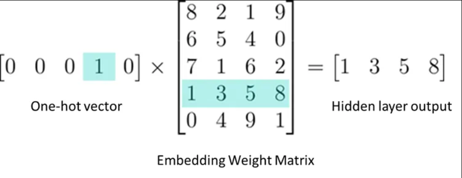
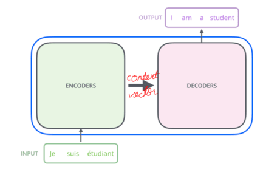
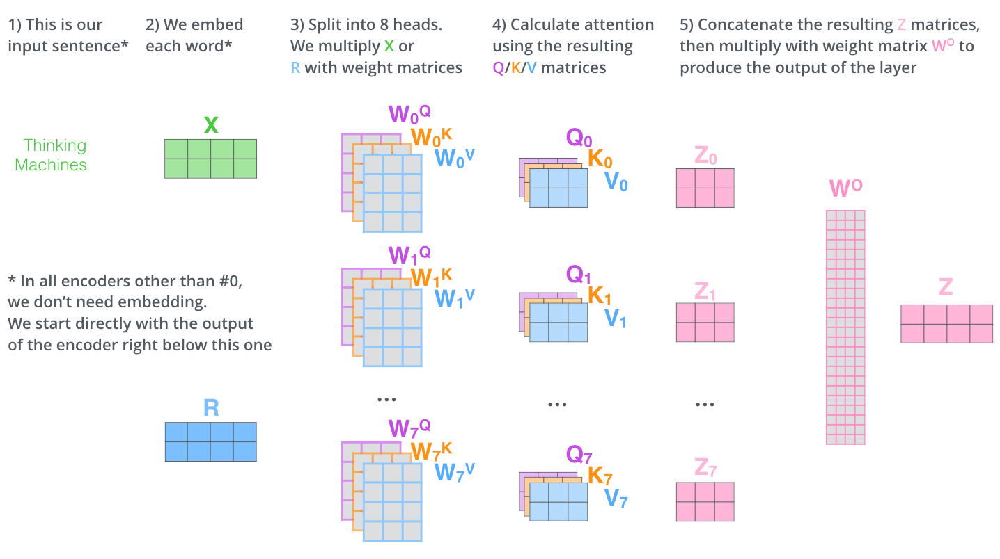
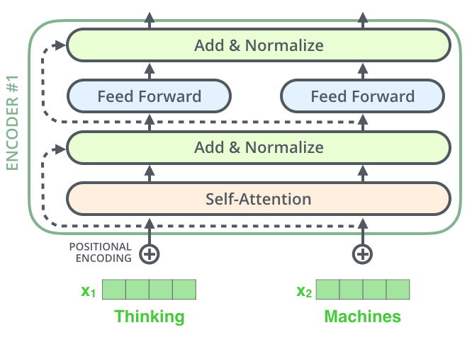
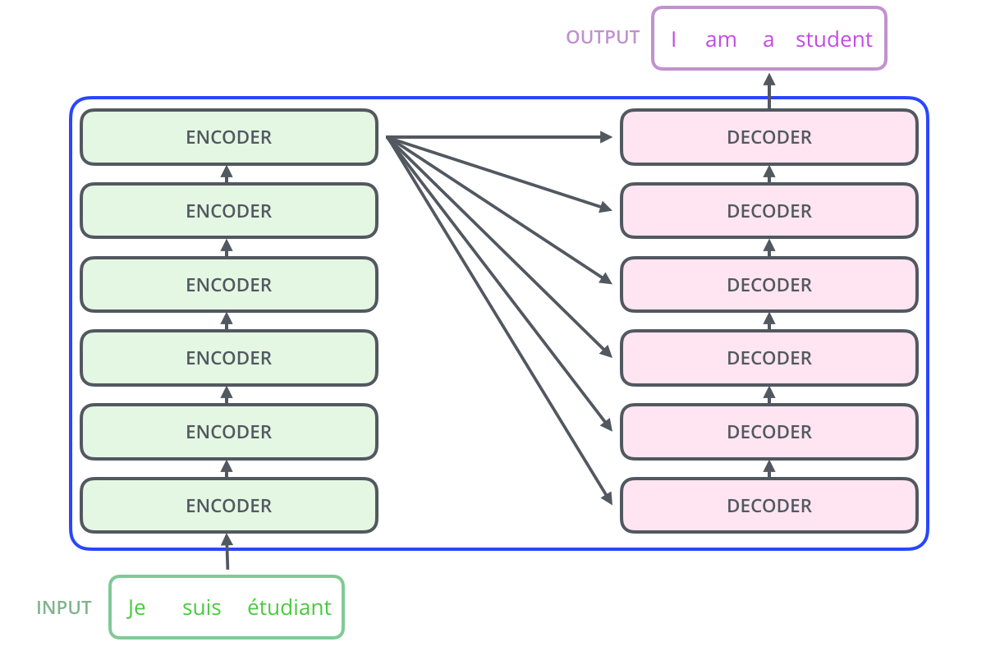
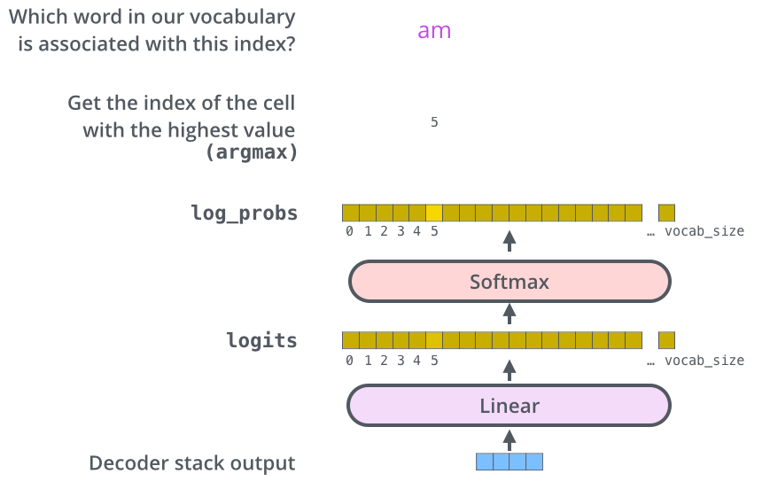

Transformer architecture — a revision
Why this page: Lecture 13/14 — Decoding strategies picks up the moment a model produces its logits. This is the revision of everything up to that moment. The one fact the decoding lecture stands on: the forward pass ends in a vector of
vocab_sizelogits, and softmax turns it into a probability distribution over the next token.
1. The task: language modelling
Language modelling is predicting the next token given everything before it:
2. Embeddings — tokens become vectors
An embedding is a real-valued vector encoding a token's meaning: tokens that mean similar things sit close together in the vector space. The embedding layer maps each token id (a one-hot vector of vocab_size) to its embedding of dimension d_model.

3. Encoder–decoder, and the variant that won
The original transformer is an encoder–decoder: the encoder turns a variable-length input into internal representations; the decoder turns those into an output sequence.

Image credits: The Illustrated Transformer
Three variants of that blueprint survive:
| Encoder–decoder | Encoder-only | Decoder-only | |
|---|---|---|---|
| Use cases | translation, summarisation | embeddings, classification | text generation |
| Training objective | predict target sequence from source | masked language modelling | autoregressive next-token prediction |
| Examples | T5, BART | BERT | GPT family, Llama, Qwen |
Every model this lecture decodes from is decoder-only — the whole model is one stack that reads the tokens so far and predicts the next.
4. Self-attention
Attention lets each position weigh every other position by relevance. Each token gets three representations:
- Query — the current token, as the thing doing the comparing
- Key — every token, as the thing being compared against
- Value — the actual content that gets weighted and summed

Multi-head attention runs several of these in parallel, each head free to learn a different relation, and concatenates the results:

In a decoder-only model the attention is causally masked: a token may attend only to positions before it — the model cannot peek at the future it is trying to predict.
5. The rest of the block
- Positional encoding — attention itself is order-blind, so position information is added to each embedding; the same word at two positions gets two slightly different vectors.
- Feed-forward network — a two-layer MLP (
d_model → dim_feedforward → d_model) applied at each position after attention. - Residual connections + layer normalisation — each sublayer's input is added to its output, then normalised; the residual path is what lets gradients flow through a deep stack.

Image credits: The Illustrated Transformer
One block = attention + FFN, wrapped in residuals and normalisation. A model is that block stacked num_layers deep:

6. The LM head — where the decoding lecture takes over
The final block's output vector (per position, size d_model) goes through one last linear layer projecting it to vocab_size scores — the logits — and softmax turns those scores into probabilities: all positive, summing to 1.

The full pipeline, end to end:

The model's job ends here. It has produced a distribution over the vocabulary. Picking a token from it is a separate decision — and that is where Lecture 13/14 — Decoding strategies takes over.
References
- Vaswani et al., Attention Is All You Need (NeurIPS 2017)
- Jay Alammar, The Illustrated Transformer
- Harvard NLP, The Annotated Transformer